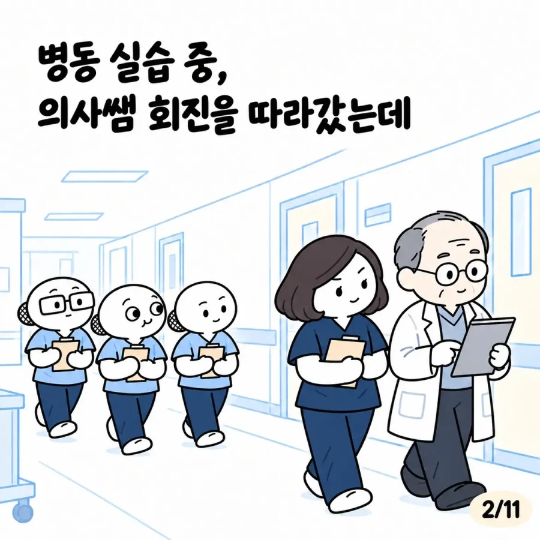
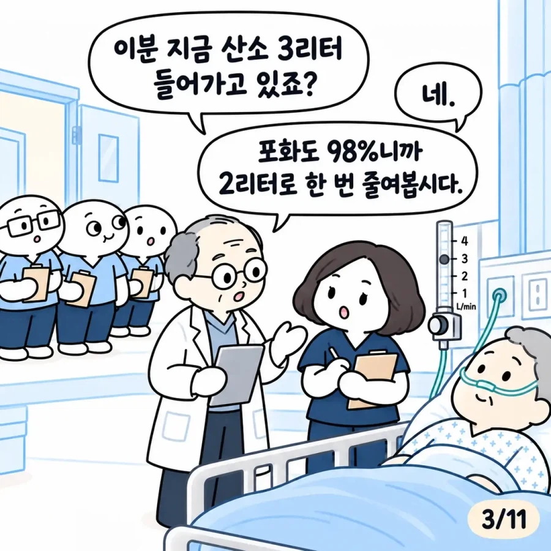
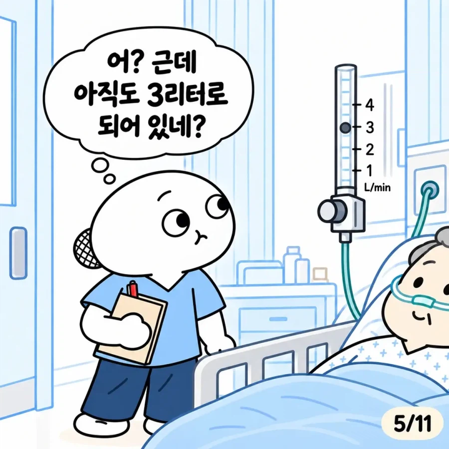
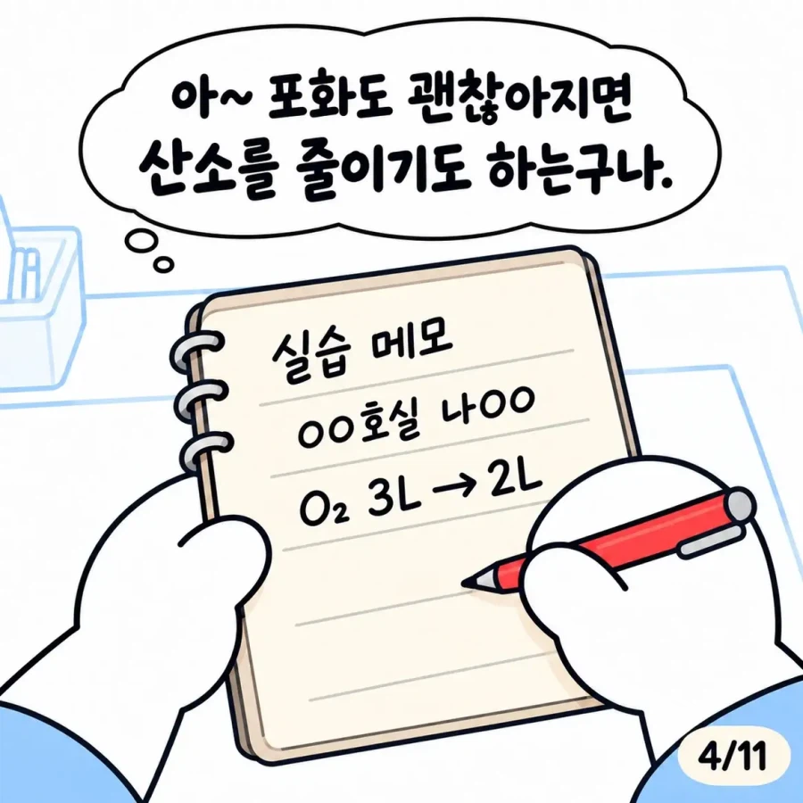
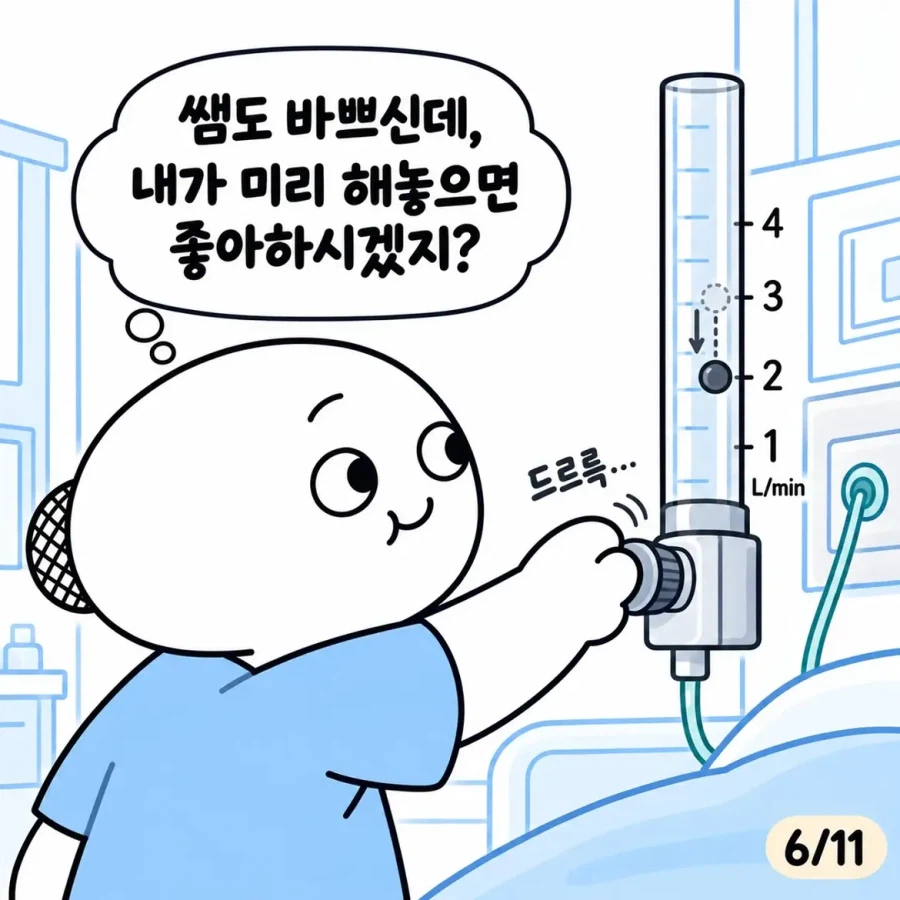
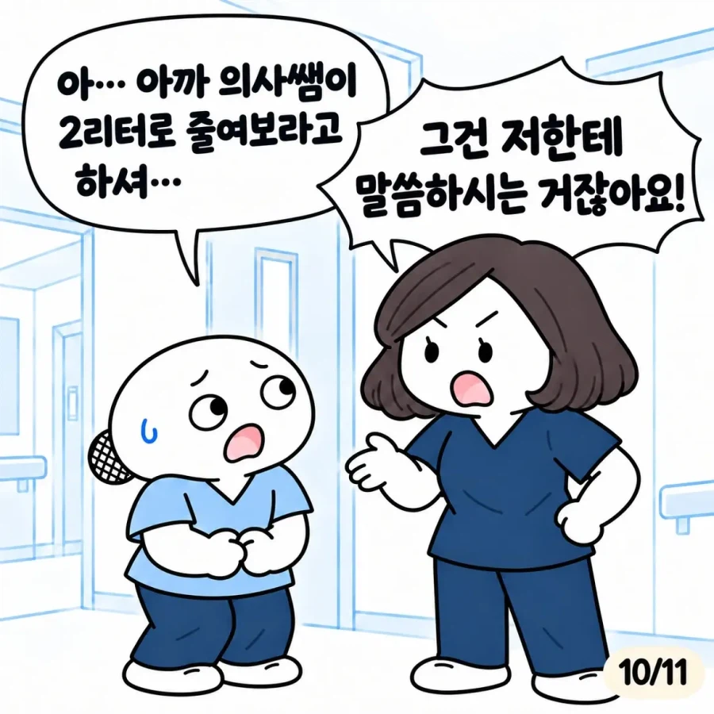
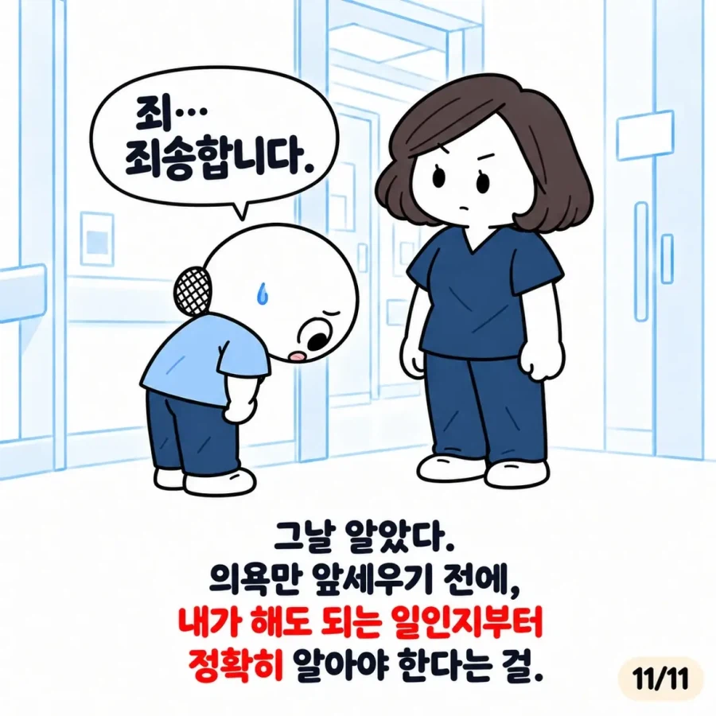

저걸 배워야 안다는게 지능이…
혹여나 이 행동 후 타인 또는 그룹이 좇되지 않음
아니면 사고 수습을 내가 확실히 할수있음
이란 전제하에 능동적으로 행동해야지 폐급폐급아..
??? : 해줘도 괜히 지랄이네
염병ㅋㅋㅋㅋㅋ
니가 죽였어
계륵 양수야?ㅋㅋㅋ
싸대기를 한대 첨가해줘야 뼛속깊이 새기지
아 씨발
실습생은 말하자면 손님임.
손님이면 최소한 물어보고 건드려야지
저건 혼나야지 뭐
환자상태나 경각심보다 칭찬이 고픈사람은 실습 전에 더 배우고 와야 하는거 아닌가싶네